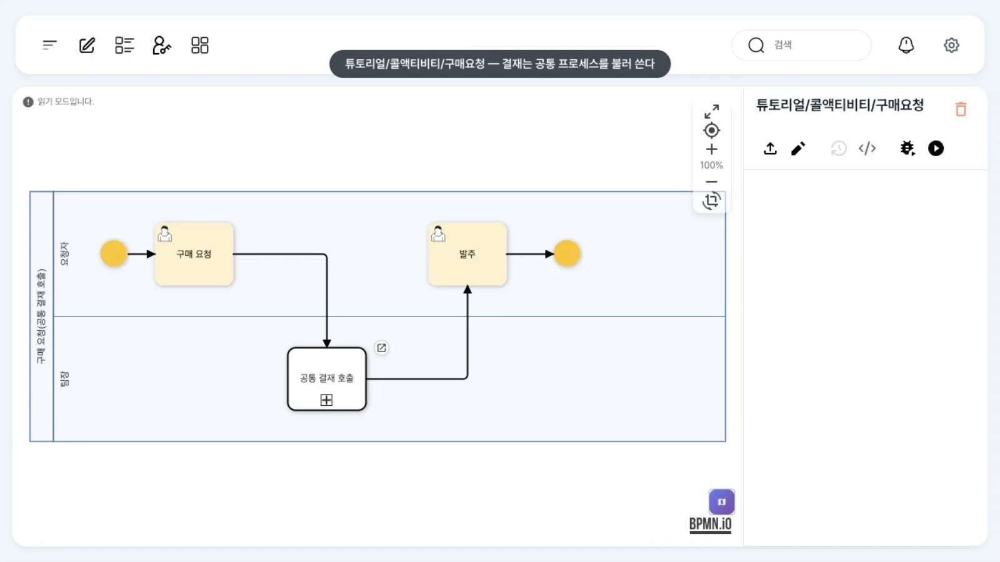
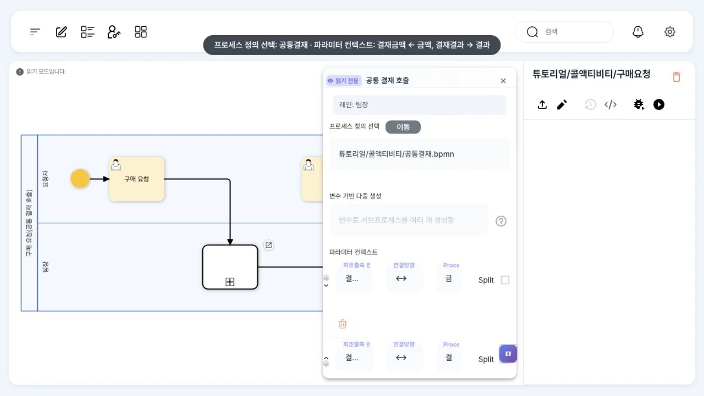
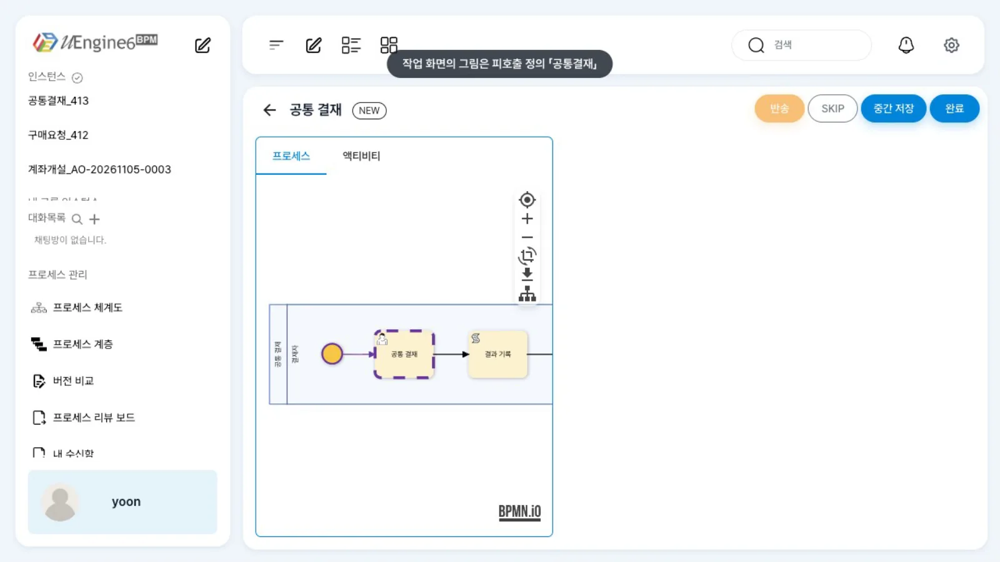
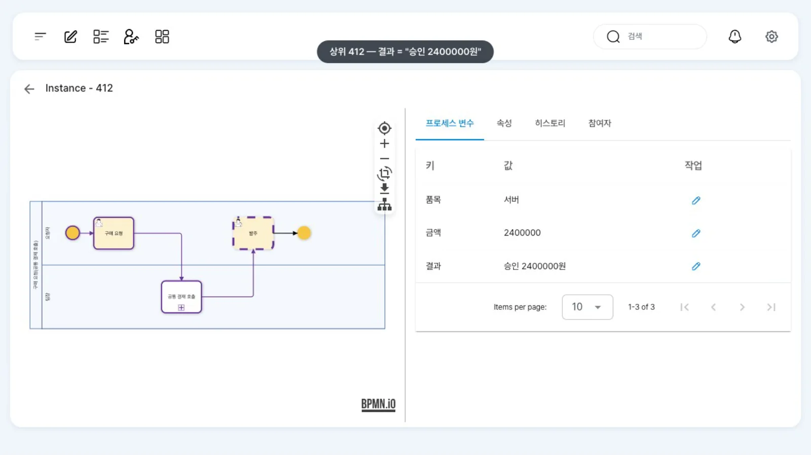

여러 프로세스가 함께 쓰는 「공통 결재」를 따로 정의해 두고, 구매 요청 프로세스에서 콜 액티비티로 불러 씁니다. 금액은 넘겨 주고(in) 결재 결과는 돌려받으며(out), 호출 쪽 「팀장」이 피호출 쪽 「결재자」가 됩니다.
무엇을 · 왜#
콜 액티비티(call activity)는 다른 프로세스 정의를 하나의 단계처럼 실행합니다. 그림에서는 테두리가 굵은 사각형입니다. 결재·검수처럼 여러 업무가 같은 절차를 쓸 때, 절차를 한곳에서 고치면 호출하는 모든 프로세스에 반영됩니다.
- 실행하면 하위 인스턴스가 새로 생깁니다(
bpm_procinst.sub_process = 1,main_inst_id= 상위 인스턴스,main_act_trc_tag= 콜 액티비티 id). 하위 인스턴스가 끝나야 상위가 다음 단계로 갑니다. - 변수 바인딩(
variableBindings):in은 상위 변수 값을 하위 변수로 복사하고,out은 하위가 끝날 때 하위 변수 값을 상위 변수로 복사합니다. - 역할 바인딩(
roleBindings): 상위의 역할(레인)에 배정된 사람을 하위의 역할로 넘깁니다. 하위 정의에서는 담당자를 지정하지 않아도 됩니다. - 바인딩에서
argument는 피호출(하위) 쪽 이름,variable·role은 호출(상위) 쪽 이름입니다.
uEngine6의 org.uengine.kernel.bpmn.CallActivity는 SubProcessActivity를 상속합니다. 이 장에서 사용하는 두 정의는 다음과 같습니다.
| 정의 | 레인 | 흐름 | 변수 |
|---|---|---|---|
튜토리얼/콜액티비티/공통결재 (피호출) |
결재자(비워 둠 — 호출 쪽이 넘김) | 공통 결재 → 결과 기록(스크립트: "승인 " + 결재금액 + "원") |
결재금액, 결재결과 |
튜토리얼/콜액티비티/구매요청 (호출) |
요청자, 팀장(윤팀장) | 구매 요청 → 공통 결재 호출 → 발주 | 품목, 금액, 결과 |
이 브랜치에서는 콜 액티비티 설정을 XML로 넣습니다
모델러의 콜 액티비티 패널은 값을 읽어서 보여 주지만, 고친 값을 저장하지 못합니다(패널이 보내는 update:uEngineProperties와 부모가 받는 update:uengineProperties의 이름이 다르기 때문). 기존 값은 정의를 다시 저장해도 지워지지 않습니다. 이 장의 정의는 XML로 만들어 배포했고, 화면에서는 보기와 실행만 합니다.
따라 하기#
- 호출 정의 보기. 홍길동으로
튜토리얼/콜액티비티/구매요청을 엽니다. 「구매 요청 → 공통 결재 호출 → 발주」입니다.
구매요청 정의 - 콜 액티비티 패널. 「공통 결재 호출」을 더블클릭합니다. 「프로세스 정의 선택」에
튜토리얼/콜액티비티/공통결재.bpmn이 있고, 「이동」을 누르면 그 정의가 열립니다. 「파라미터 컨텍스트」에는 두 줄(피호출측 변수 · 연결방향 · Process Data), 화면을 아래로 내리면 「역할 매핑」에 한 줄(Callee Roles · 연결방향 · Caller Roles)이 있습니다. 패널의 칸이 좁아 이름이 「결…」처럼 잘려 보이므로, 값은 다음 단계의 XML로 확인합니다. 이 장의 값은결재금액←금액,결재결과→결과,결재자←팀장입니다.
콜 액티비티 패널 - XML로 확인. 「XML 보기」에서 콜 액티비티의
definitionId·variableBindings·roleBindings를 확인합니다. 이 값을 바꿀 때는 XML(정의 파일)을 고쳐 배포합니다. - 피호출 정의 보기.
튜토리얼/콜액티비티/공통결재를 엽니다. 레인 「결재자」 하나에 「공통 결재 → 결과 기록」입니다. - 요청. 인스턴스를 시작합니다(이 장에서는 API로 시작해 역할 「요청자」=최구매, 「팀장」=윤팀장을 넘김 — 아래 레퍼런스). 최구매가 업무 목록에서 「구매 요청」을 열어 품목
서버, 금액2400000으로 「완료」합니다. - 하위 인스턴스의 작업. 「공통 결재」는 하위 인스턴스에 생기고 윤팀장(
yoon)에게 배정됩니다(GET /worklist/search/findToDo에도 나옵니다). 하지만 이 브랜치의 업무 목록 화면에는 보이지 않습니다(아래 「알려진 제약」). 작업 주소/todolist/<작업 ID>로 직접 열면 작업 화면에 피호출 정의(공통결재) 그림이 보이고, 「완료」할 수 있습니다.
하위 인스턴스의 공통 결재 - 상위로 돌아옴. 하위 인스턴스가 끝나면 최구매의 업무 목록에 상위 인스턴스의 「발주」가 생깁니다.
- 변수 확인. 관리자 상세에서 상위 인스턴스의
결과는승인 2400000원(하위의결재결과가 out으로), 하위 인스턴스의결재금액은2400000(상위의금액이 in으로)입니다.
상위 인스턴스의 결과 변수
설정 레퍼런스#
콜 액티비티 JSON#
| 속성 | 뜻 | 이 장의 값 |
|---|---|---|
definitionId |
호출할 정의 경로(.bpmn 포함) |
튜토리얼/콜액티비티/공통결재.bpmn |
version |
호출할 정의 버전(archive의 파일 이름) | 1.0 |
variableBindings[] |
{argument:{text:<하위 변수>}, variable:{name:<상위 변수>}, direction:"in"\|"out"} |
결재금액 ← 금액(in), 결재결과 → 결과(out) |
roleBindings[] |
{argument:<하위 역할>, role:{name:<상위 역할>}, direction:"in"} |
결재자 ← 팀장 |
XML 속성 calledElement |
표준 BPMN 속성(참고용) | Process_CommonApproval |
<bpmn:callActivity id="Call" name="공통 결재 호출" calledElement="Process_CommonApproval">
<bpmn:extensionElements><uengine:properties><uengine:json>
{"definitionId":"튜토리얼/콜액티비티/공통결재.bpmn","version":"1.0",
"variableBindings":[
{"argument":{"text":"결재금액"},"variable":{"name":"금액"},"direction":"in"},
{"argument":{"text":"결재결과"},"variable":{"name":"결과"},"direction":"out"}],
"roleBindings":[{"argument":"결재자","role":{"name":"팀장"},"direction":"in"}]}
</uengine:json></uengine:properties></bpmn:extensionElements>
</bpmn:callActivity>
패널 칸 ↔ JSON#
| 패널 칸 | JSON |
|---|---|
| 「프로세스 정의 선택」(+ 「이동」) | definitionId |
| 「파라미터 컨텍스트」의 피호출측 변수 · 연결방향 · Process Data | variableBindings[].argument.text · direction · variable.name |
| 「역할 매핑」의 Callee Roles · 연결방향 · Caller Roles | roleBindings[].argument · direction · role.name |
| 「변수 기반 다중 생성」 | forEachVariable(하위 인스턴스를 목록 항목마다 — 이 장에서는 쓰지 않음) |
시작할 때 역할 넘기기#
호출 쪽 역할이 정해져 있어야 하위로 넘어갑니다. 이 장에서는 시작할 때 두 역할을 넘겼습니다.
curl -X POST http://localhost:9294/instance -H "Authorization: Bearer $TOKEN" -H 'Content-Type: application/json' \
-d '{"processDefinitionId":"튜토리얼/콜액티비티/구매요청",
"roleMappings":[{"name":"요청자","endpoints":["choi"]},{"name":"팀장","endpoints":["yoon"]}]}'
상위·하위 인스턴스 찾기#
select inst_id, def_id, status, sub_process, main_inst_id, main_act_trc_tag
from bpm_procinst where inst_id = :상위 or main_inst_id = :상위;
| inst | def_id | sub_process | main_inst_id | main_act_trc_tag |
|---|---|---|---|---|
| 상위 | 튜토리얼/콜액티비티/구매요청 | 0 | — | — |
| 하위 | 튜토리얼/콜액티비티/공통결재 | 1 | 상위 | Call |
흔한 실수#
| 증상 | 원인 | 고치는 법 |
|---|---|---|
| 패널에서 바꾼 정의·바인딩이 저장 후 원래대로 | 패널 저장 결함(위 경고) | XML로 고쳐 배포 |
| 하위의 작업이 아무에게도 안 감 | 역할 바인딩이 없거나 상위 역할이 비어 있음 | roleBindings를 두고, 시작할 때 상위 역할을 넘기거나 레인에 담당자를 지정합니다 |
상위 결과가 비어 있음 |
out 방향이 아니거나 하위 변수 이름이 다름 |
argument.text는 하위 이름, variable.name은 상위 이름 |
| 하위 작업이 업무 목록에 없음 | 업무 목록 화면이 상위 인스턴스 기준으로 거름(알려진 제약) | 작업 주소로 열거나 API로 처리 |
알려진 제약#
- 패널 저장 안 됨: 콜 액티비티 패널은 값을 보여 주지만 고친 값을 저장하지 못합니다(맨 위 경고). 설정은 XML로 넣습니다.
- 하위 인스턴스 작업이 업무 목록에 안 보임: 업무 목록 화면(
TodolistCard.vue의filterByCurrentActivities)이 작업을rootInstId(상위 인스턴스)의 진행 중 활동과 비교해 거릅니다. 상위에서 진행 중인 것은 콜 액티비티(Call)이므로 하위의 「공통 결재」(Approve)가 빠집니다. 서버의findToDo는 이 작업을 돌려주므로, 작업 주소(/todolist/<작업 ID>)로 열거나 API(POST /work-item/{id}/complete)로 처리합니다. 알림·메일 등으로 작업 주소를 전달하는 것이 이 브랜치의 우회 방법입니다. - 패널의 칸이 좁아 바인딩 이름이 잘려 보입니다. 값은 「XML 보기」로 확인합니다.
확인 문제#
「공통 결재」 정의에 레인 담당자를 직접 걸지 않은 이유는 무엇인가요?
호출하는 프로세스마다 결재자가 다르기 때문입니다. 역할 바인딩으로 호출 쪽이 「결재자」를 정해 넘기면, 공통 정의에서는 담당자를 지정하지 않아도 됩니다.
하위 인스턴스가 끝나기 전에 상위의 「발주」가 생기나요?
생기지 않습니다. 콜 액티비티는 하위 인스턴스가 끝나야 완료되고, 그때 out 바인딩으로 결과를 받은 뒤 다음 단계로 갑니다.